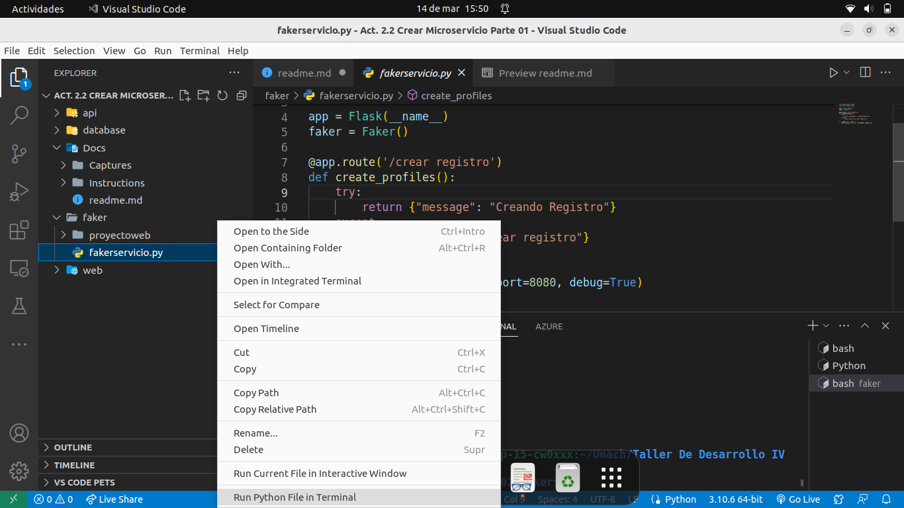

Act. 2.2 Crear Microservicio Parte 01
Repositorio:
https://github.com/Gilberto-Guzman/Creacion-De-Microservicios
Comandos utilizados:
python3 -m venv proyectoweb
http://10.33.26.185:8080/crear%20registro
Librerias Utilizadas:
pip install flask
pip install faker
Capturas.
1. Estructuramos nuestro proyecto ➡ Creamos la carpeta api, database, faker y web.
Nota: La carpeta Docs hace referencia unicamente a la documentación del proyecto, osea que su creacion es opcional y no afecta a la funcionalidad del codigo.
Nota: Este nos proovera de una plantilla la cual nos servira proximamente.
python3 -m venv proyectoweb

3. Creación de fakerservicio ➡ Creamos un archivo de python llamado fakerservicio.py , el cual contendra el siguiente codigo:
from flask import Flask
from faker import Faker
app = Flask(__name__)
faker = Faker()
@app.route('/crear registro')
def create_profiles():
try:
return {"message": "Creando Registro"}
except:
return {"Error en crear registro"}
if __name__ == '__main__':
app.run(host='0.0.0.0', port=8080, debug=True)

4. Ejecución del codigo ➡ Daremos clic derecho en "run in python terminal" para corroborar que el codigo este funcionando.

Y luego en el navegador, digitaremos la siguiente dirección:
http://10.33.26.185:8080/crear%20registro

Esta nos mostrara la creación del registro.